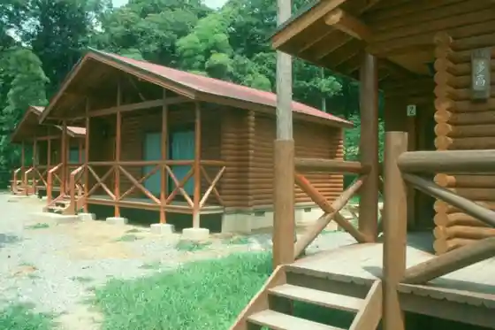
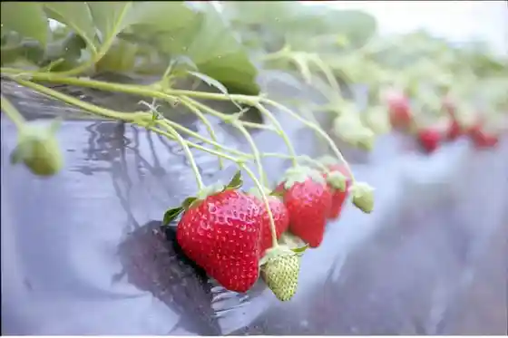
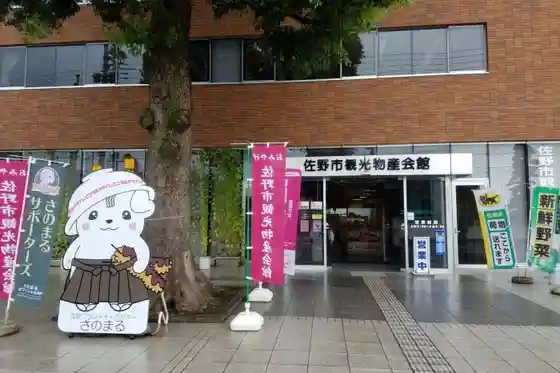

Sano Puremiamu Autoretto
Sano, Tochigi · 050-1809-3464 · Official / source link
Negoya Forest Park
Sano, Tochigi · 0283-66-2939 · Official / source link

Domannaka Tanuma Tourist Farm Sarubashi Farm
Sano, Tochigi · 0283-62-8838 · Official / source link

Tenmei Imono
Sano, Tochigi · Official / source link
Sano Kanko Bussan Hall
Sano, Tochigi · 0283-21-5111 · Official / source link

6 Gatsu no Mori Oberuju
Sano, Tochigi · 0283-21-4911 · Official / source link
Cha
Sano, Tochigi · 0283-22-3438 · Official / source link
Ramen Tashichi
Sano, Tochigi · 0283-21-8448 · Official / source link
Men Ya Yosuke Horigome Mise
Sano, Tochigi · 0283-85-7740 · Official / source link
Men Ya Yosuke Sano Shinto City Mise
Sano, Tochigi · 0283-55-7175 · Official / source link
Men Ya Yosuke Main Shop
Sano, Tochigi · 0283-85-9221 · Official / source link
Ka Ta Yama Park
Sano, Tochigi · 0283-27-3011 · Official / source link
Shutsu Ryu Hara Benten Ike Isoyama Benzaiten (Isoyama Park)
Sano, Tochigi · 0283-25-0228 · Official / source link
Sano Kyodo Museum
Sano, Tochigi · 0283-22-5111 · Official / source link
Amami Tokoro Kikusui En
Sano, Tochigi · 0283-21-5584 · Official / source link
Karasawa Yama Castle Ruins (Kuni Shitei Historic Site)
Sano, Tochigi · 0283-24-1138 · Official / source link
Sano Ramen
Sano, Tochigi · 0283-21-5111 · Official / source link
Roadside Station Domannakatanuma
Sano, Tochigi · 0283-61-0077 · Official / source link
Manyo Nature Park Katakuri Village
Sano, Tochigi · 0283-21-1187 · Official / source link
Fukuju So Baiten
Sano, Tochigi · 0283-25-0410 · Official / source link
Sano SA (Kudari) Infomeshon
Sano, Tochigi · 0283-23-7133 · Official / source link
Uzu no Cave
Sano, Tochigi · 0283-27-3011 · Official / source link
Sano Kokusai Kurigatto Ba Teiirumu
Sano, Tochigi · 050-3766-4483 · Official / source link
Sano Yaku Yoke Taishi (Kasuga Okayama So Shu Tera)
Sano, Tochigi · 0283-22-5229 · Official / source link
Miso Manju Arai Ya
Sano, Tochigi · 0283-85-8110 · Official / source link
Sano Ekimae Koryu Plaza
Sano, Tochigi · 0283-27-0005 · Official / source link
Sano Ramen Ei Hana Gyoza Kobo Chokubai Tokoro
Sano, Tochigi · 0283-21-2593 · Official / source link
Sano Tourist Farm Ichigo Hatake
Sano, Tochigi · 0283-20-5215 · Official / source link
Orikkusurentaka Sano Mise
Sano, Tochigi · 0283-27-1543 · Official / source link
Toyotarentariisu Tochigi Sano Mise
Sano, Tochigi · 0283-21-0100 · Official / source link
Mikamo Habu Sono (Mikamo Sanko Ennai)
Sano, Tochigi · 0283-24-6152 · Official / source link
Sano SA (Nobori) Infomeshon
Sano, Tochigi · 0283-23-8855 · Official / source link
Ikoi Kan
Sano, Tochigi · 0283-65-0153 · Official / source link
Su Hanasaka Park (Ikoi Kan Hotaru)
Sano, Tochigi · 0283-65-0153 · Official / source link
Ningenkokuho Ta Village Koichi Art Museum
Sano, Tochigi · 0283-86-9777 · Official / source link
Awashima Do Tochigi Sano Kojo
Sano, Tochigi · 0283-86-7223 · Official / source link
Ando Yuji (Shonen no Nichi) Art Museum
Sano, Tochigi · 0283-67-1080 · Official / source link
Yomogi Yama Resutoran
Sano, Tochigi · 0283-67-1100 · Official / source link
Negoya Tei (Negoya Forest Park Shikichinai)
Sano, Tochigi · 0283-66-2218 · Official / source link
Ashikaga Kantorii Club Tako Kosu
Sano, Tochigi · 0283-66-2121 · Official / source link
Mitsuhasosu (Hayakawa Shokuhin)
Sano, Tochigi · 0283-22-0905 · Official / source link
Kai Hana Gyararii Shuzo Raku
Sano, Tochigi · 0283-22-0001 · Official / source link